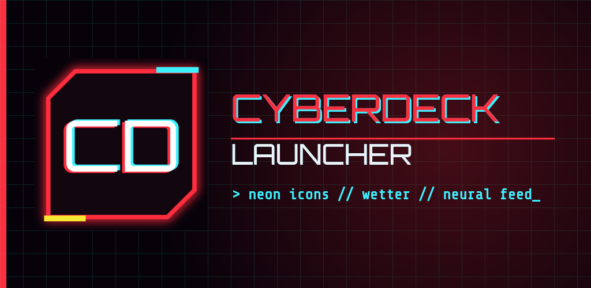

Startbildschirm für Android im Cyberpunk-Look: Neon-Icons, Wetter, Now Playing, eigener Benachrichtigungs-Feed und Wallpaper-Generator. Kein Konto, keine Werbung, kein Tracking.
Status: Testphase – bald im Google Play Store.
Datenschutzerklärung / Privacy Policy